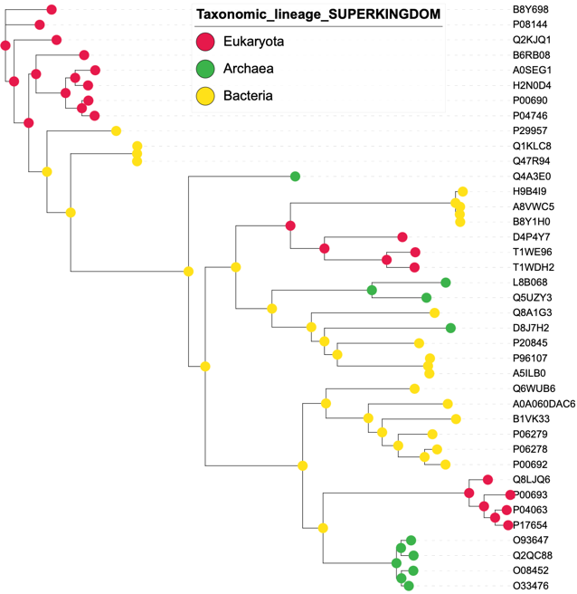
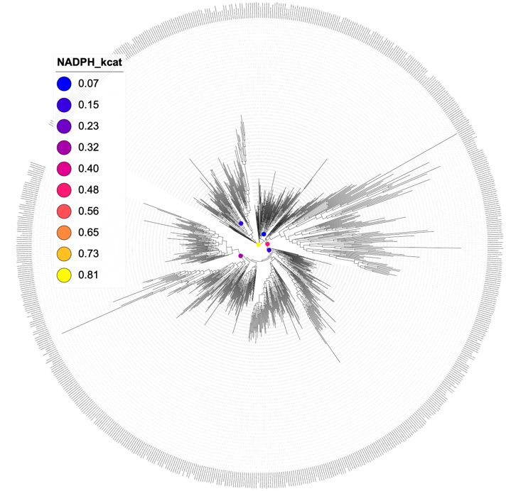
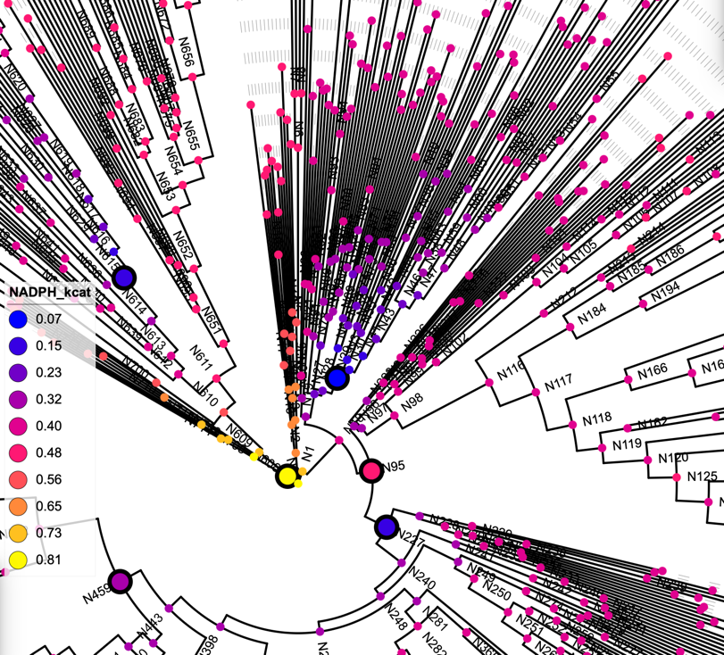
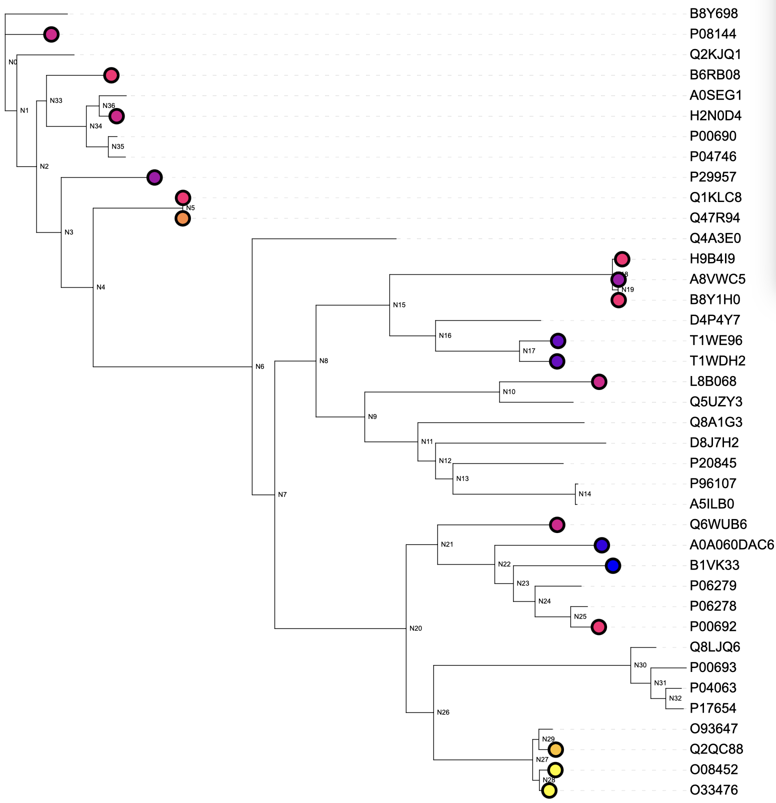
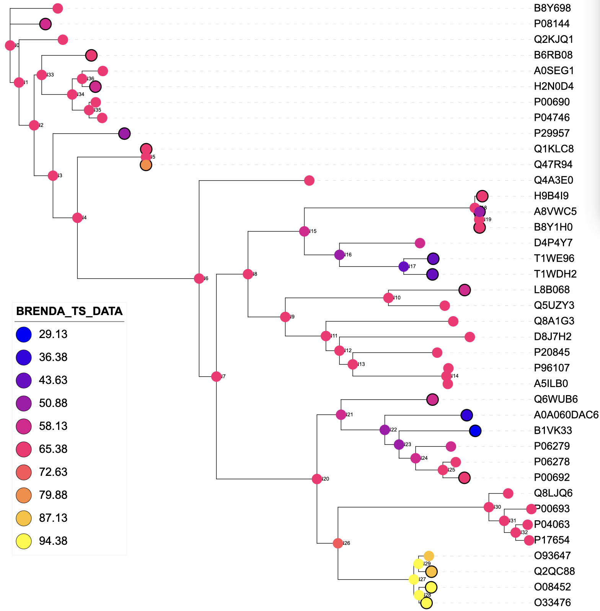

TreeGazer
TreeGazer is a tool to annotate ancestors and extant nodes in a phylogenetic tree by reference to a subset of nodes with known properties. These properties are represented by either discrete or continuous variables. In the latter case, it also uses latent discrete variables to mix (Gaussian) distributions of the observable continuous variables. (The parameters for these mixtures are shared between all nodes in the tree; the states at the nodes are governed by an evolutionary model.) The use of latent variables is optional for discrete observables. TreeGazer forms part of the GRASP-suite (Foley et al., 2022).
Using TreeGazer
Usage: asr.TreeGazer
[-nwk <tree-file> -in {<label>{:<parser>}@}<input-file> -out <output-file>]
{-model <uniform(default)>}
{-gamma <value (default 1.0)>}
{-params <JSON-file>}
{-latent <#states>}
{-internal}
{-learn}
{-untied}
{-seed <seed>}
{-joint (default) | -marg {<branchpoint-id>} }
{-format <TSV(default), TREE, STDOUT, ITOL>}
{-lambda <value (default 5.0)>}
{-help|-h}
{-verbose|-v}
where:
tree-file is a phylogenetic tree on Newick format
input-file is a table with sequence or ancestor names in the first column, and corresponding values
(empty or None or null implies not assigned) on TSV format
label flags that a header is used in the input-file and identifies the column with values to be modelled;
if no label is given, headers are assumed absent and values from the second column will be modelled
parser identifies a parser to use on the column with values (e.g. BRENDA).
output-file will contain:
- inferred branch point states on specified format (TSV by default, TREE is a labelled tree on Newick format, ITOL is a dataset to decorate trees in iTOL.embl.de), or
gamma-value is parameter to the uniform model (n-state generalisation of Jukes-Cantor)
lambda is the multiplier for the upper confidence bound of predicted values (used only when latent mode with real values is applied)
params contains a JSON string specifying the distribution for latent nodes (if latent mode is used)
latent indicates that the tree consists of latent values only (latent mode), with specified values as extensions to the leaves.
- #states is the number of latent states to learn (should not exceed 25, labelled A-Z).
internal indicates that internal nodes are also extended with user-specified or learned distributions (default leaves-only).
learn excludes inference and instead prompts EM learning of parameters, using input data as training data.
untied implies that the variance learned is NOT the same across the latent states (only applicable when EM-learning GDTs; default is on).
help prints out commandline arguments (this screen).
verbose completes the requested steps while printing out messages about the process.
Notes:
Evolutionary models of substitution are currently limited to uniform, which is an adaptation of Jukes-Cantor for arbitrary number of states.
- gamma-value is used by this model
If specified values are real, a conditional Gaussian mixture distribution conditioned on latent state is learned.
If specified values are discrete, a multinomial distribution conditioned on latent state is learned.
Inference is either joint (default) or marginal (marginal allows a branch-point to be nominated;
if one is not given all uninstantiated nodes are inferred)
Notes:
Evolutionary models of substitution are currently limited to uniform, which is an adaptation of Jukes-Cantor for arbitrary number of states (gamma-value is used by this model).
If specified values are real, a conditional Gaussian mixture distribution conditioned on latent state is learned.
If specified values are discrete, a multinomial distribution conditioned on latent state is learned.
Inference is either joint (default) or marginal (marginal allows a branch-point to be nominated; if one is not given all uninstantiated nodes are inferred).
Examples
Example 1
Here we use a tree ancestors.nwk with extant nodes labelled by their accession IDs and internal, ancestor nodes labelled
as per GRASP (N0, N1, etc in a depth first manner). Then we have a tab-separated value file (TSV file) with annotations
annotations.txt extracted from various sources; each column has a header (e.g. SUPERKINGDOM) that we reference below.
We infer the joint labeling (-joint) of external and internal (-internal) nodes most likely to explain the labels in the matching annotation file.
AnnotAceR -nwk ancestors.nwk -in SUPERKINGDOM@annotations.txt -joint -internal -out tst_Taxonomic_lineage_SUPERKINGDOM.txt -format ITOL
Here are 10 lines from annotations.txt:
Entry PHYLUM SUPERKINGDOM BRENDA_TS_DATA
A5ILB0 Thermotogae Bacteria None
P08144 Arthropoda Eukaryota 57.7_count=1
P29957 Proteobacteria Bacteria 44.1_count=1
H2N0D4 Chordata Eukaryota 55_count=1
T1WDH2 Ciliophora Eukaryota 40_count=1;50_count=2
T1WE96 Ciliophora Eukaryota 40_count=1;50_count=2
H9B4I9 Firmicutes Bacteria 62.3_count=2
A0A060DAC6 None None 34_count=1;55_count=3
Q47R94 Actinobacteria Bacteria 74_count=1
The result is here saved as an iTOL dataset file (-format ITOL), which we drop in the iTOL webtool once the tree file has been uploaded.

Example 2
This example learns distributions for continuous, experimental values, as observed for various ancestral reconstructions across a tree (yes, you can mix extants and ancestors). It then infers continuous values for uninstantiated nodes in the tree, including other ancestors and all extants, conditioned on those that are known.
First, learning the distribution shared by all nodes (external and internal, as turned "on" by the option
-internal). The model uses three latent states (-latent 3) for which it invents three discrete values:
NADPH_kcat_1, NADPH_kcat_2, ... These are not shown by default in marginal inference, as the method
instead opts to sample the continuous distribution many times to arrive at a mean value.
asr.TreeGazer -nwk kari_ancestors.nwk -in NADPH_kcat@experiments.txt -latent 3 -learn -internal -params params_NADPH_kcat.json -out trn_NADPH_kcat.txt -format ITOL -seed 1 -tied
Experimental values are available for a group of ancestors in experiments.txt (TSV file; note that
ancestor names are numbers as generated by GRASP, not including the 'N' prefix). Note also that when no
value is available you just leave that cell blank or use a value like null, None:
Ancestor NADPH_kcat NADH_kcat NADPH_km NADH_km NADPH_kcat_km NADH_kcat_km NADPH_Vmax NADH_Vmax NADH_Tm
615 0.102 0.04 0.106 0.251 0.965 0.158 1.02E-04 3.95E-05 75.0
459 0.244 0.213 0.06 0.131 4.081 1.627 1.22E-04 1.06E-04
608 0.854 0.582 0.563 0.854 1.518 0.681 8.54E-04 5.82E-04 100.0
95 0.474 0.456 0.177 0.217 2.686 2.119 4.74E-04 4.56E-04 90.0
29 0.028 0.04 0.112 0.074 0.245 0.538 2.75E-04 3.99E-05
227 0.138 0.083 0.2277 0.1702 0.607 0.546 1.38E-04 9.29E-05 95.0
79 85.0%
Training was done with tied variances as this dataset is extremely sparse (only five values known). The latent-to-continuous value distribution shared between nodes is saved after training as:
{"Condition":[["NADPH_kcat_1"],["NADPH_kcat_2"],["NADPH_kcat_3"]],
"Pr":[[0.8539999487484222,0.007448424553531107],
[0.29523664088109924,0.007448424553531107],
[0.07218627893409603,0.007448424553531107]],
"Variable":{"Domain":{"Predef":"Real"},"Name":"0_Real"},"Nodetype":"GDT","TieVariance":2,"Index":[0,1,2]}
The training data was saved as an iTOL dataset above and can be dropped into the iTOL webtool and shows up like this.

Now, let's run the inference.
asr.TreeGazer -nwk kari_ancestors.nwk -in NADPH_kcat@experiments.txt -latent 3 -marg -internal -params params_NADPH_kcat.json -out tst_NADPH_kcat.txt -format ITOL -seed 1 -tied
Sampling from Gaussian mixture at each uninstantiated node gives:

Change -format TSV gives a file with this "head".
Ancestor NADPH_kcat
N0 0.754645807596001
N1 0.6482432683741166
N2 0.6378986978798374
N3 0.5932161625795987
N4 0.5734614385345007
N5 0.5261001211533353
tr|A0A0A7GET6|A0A0A7GET6_GEOAI 0.4469566331089113
N6 0.4536806953981594
N7 0.44623041036501315
Example 3
asr.TreeGazer -nwk ancestors.nwk -in BRENDA_TS_DATA:BRENDA@annotations.txt -learn -tied -latent 3 -internal -params params_BRENDA_TS_DATA.json -out tst_BRENDA_TS_DATA.txt -format ITOL -seed 2
learns a single mixture of Gaussians for the continuous property values in the column BRENDA_TS_DATA extracted by the parser BRENDA. The mixture is saved in a file params_BRENDA_TS_DATA.json;
the training data is re-saved for visualisation in iTOL as tst_BRENDA_TS_DATA.txt. Notice that the -tied variance option was used ensuring that the
variance for each component is the same value, pooled from all the data. This is recommended if the data is sparse.
The input tree file is on the Newick format with labelled extand and ancestor nodes (N0, ...), the other
input file annotations.txt is a TAB-separated value file (TSV), which is partially shown in Example 1 above.
The Gaussian mixture file looks like this:
{"Condition":[["BRENDA_TS_DATA_1"],["BRENDA_TS_DATA_2"],["BRENDA_TS_DATA_3"]],
"Pr":[[89.33343935081669,51.919856563088985],
[60.4077134808605,51.919856563088985],
[35.758600529629916,51.919856563088985]],
"Variable":{"Domain":{"Predef":"Real"},"Name":"0_Real"},"Nodetype":"GDT","TieVariance":2,"Index":[0,1,2]}
The iTOL file follows the dataset format, so can be dropped into the iTOL webtool after the tree has been uploaded.

The inference for all other nodes can be done with the following command, making reference to the Gaussian mixture generated above:
asr.TreeGazer -nwk ancestors.nwk -in BRENDA_TS_DATA:BRENDA@annotations.txt -marg -tied -latent 3 -internal -params params_BRENDA_TS_DATA.json -out trn_BRENDA_TS_DATA.txt -format ITOL -seed 2
The inference generates another file, in this case again on the iTOL format, enabling it to be used as a second dataset
for visualisation. If you'd like it to be presented as a TSV file, use -format TSV.
This is the iTOL visual (added ontop of the previous with training data):
